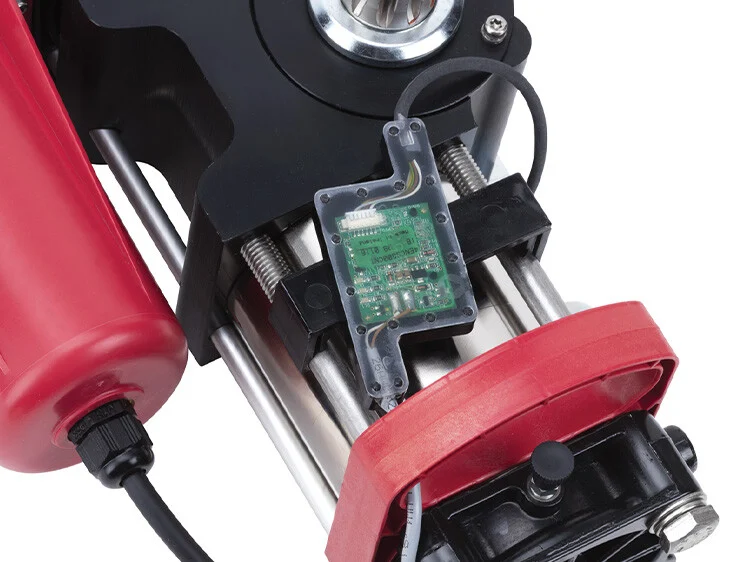

Bienvenido a Dussich Services
Nuestra experiencia para controlar tu entrada!
Nuestra experiencia para controlar tu entrada!
Operatore interrato a tecnologia idraulica 230V.
Encoder magnetico assoluto con BUS 2easy integrato (collegamento a due cavi non polarizzato).
Arresti meccanici integrati, permette di evitare l’installazione di battute meccaniche in apertura e chiusura. Brevetto FAAC.
L’unione della tecnologia oleodinamica FAAC al motore 24V DC fa di S800H ENC un operatore robusto, affidabile, dalle alte prestazioni, idoneo per applicazioni ad alta frequenza di transito; inoltre, garantisce la possibilità di funzionamento a batterie in caso di mancanza di alimentazione di rete.
La sicurezza anti schiacciamento e la funzione di inversione su ostacolo sono garantite dalla presenza di un encoder assoluto BUS 2easy (collegabile mediante due soli cavi non polarizzati).
In caso di assenza di alimentazione, l’encoder, in quanto assoluto, mantiene in memoria la posizione dell’anta ovunque si sia fermata.
info tecniche

Automatizaciones para puertas corredizas con peso desde 900kg hasta 3500kg.

Automatizaciones para puertas batientes con ancho desde 1,3mts hasta 7mts.

Barreras automáticas para carriles desde 2mts hasta 8mts.

Automatizaciones para puertas corredizas y batientes para accesos peatonales.